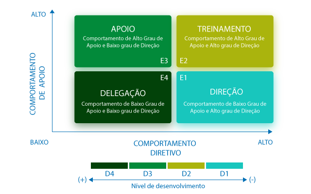

Liderança Situacional
Bem-vindo(a) à aula 6 do curso Ferramentas para Gestão de PessoasEm seu percurso até aqui você já estudou os principais aspectos relacionados à comunicação e também os instrumentos para potencializar a forma como você pode comunicar suas ideias, por meio de técnicas de PNL e comunicação não violenta.
Você também estudou algumas estratégias para delegação de tarefas, considerando seu papel enquanto líder.
Nesta aula você conhecerá o conceito de Liderança Situacional e poderá entender qual é a melhor forma de comunicação para liderar sua equipe em cada contexto, aplicando os conhecimentos adquiridos até este momento.
Ao final da aula, você encontrará recomendações de leituras e vídeos.
Vamos lá?
Bom estudo!
Liderança e Comunicação
A comunicação é a principal ferramenta comportamental para a liderança, já que por meio dela alinhamos os objetivos da organização e da equipe, identificamos as necessidades, nos mostramos para o outro, e este é um elemento essencial para gerar confiança e credibilidade. Por meio de uma comunicação eficaz passamos instruções de trabalho, debatemos ideias, tomamos decisões, criamos, inovamos, facilitamos as mudanças e interagimos com o outro para gerar colaboração. Enfim, a comunicação é a ferramenta básica para a gestão, entendida com um processo de interação humana para gerar resultados.
Na teoria da liderança situacional, como veremos a seguir, leva-se em conta o nível de maturidade das equipes e como isso deve influenciar o comportamento do líder. Um modelo de liderança eficaz deve considerar as necessidades dos colaboradores e seus diferentes níveis de motivação com a tarefa.
Esta teoria é reconhecida e tem sido cada vez mais utilizada pelas organizações porque prepara o líder para momentos críticos, visando motivar colaboradores em diferentes estágios de desenvolvimento.
Teoria da Liderança Situacional de Hersey e Blanchard
Segundo BOWDITCH & BUONO (1999), liderança tem sido um tema de estudo no campo do comportamento organizacional desde a década de 30. Várias teorias sobre liderança foram desenvolvidas pelas diversas escolas de pensamento. As teorias desenvolvidas podem ser agrupadas em categorias:
1 - Abordagem de traços;
2 - Perspectiva comportamental ou funcional;
3 - Visão situacional.
Vamos conhecer um pouco mais sobre a Liderança Situacional que se enquadra na terceira categoria.
Teoria da Liderança Situacional de Hersey e Blanchard
Uma teoria de liderança que vem se mantendo aplicável, apesar das transformações no ambiente da gestão é a Teoria da Liderança Situacional de Hersey e Blanchard. Além de permanentes atualizações dos autores, trata-se de um modelo flexível, que desmistifica a ideia de um estilo de líder ideal.
Esta teoria aponta que existe um estilo mais eficaz de liderança dependendo da situação, levando-se em conta o contexto, o momento e, especialmente, a tarefa a ser realizada, bem como aspectos do liderado que irá executá-la. Algumas características importantes desta teoria são:
O fator mais importante entre os que influem no estilo de um líder é o nível de desenvolvimento (maturidade) de um liderado
Nível de desenvolvimento define-se pela competência para execução da tarefa e nível de motivação e compromisso com a tarefa
Semelhança com a relação entre pais e filhos: quanto mais maturidade, menos diretivo é o líder
O líder se ocupa
DA TAREFA
DA RELAÇÃO
Estes são os dois principais aspectos aos quais o líder deve estar atento para exercer bem a liderança situacional, à luz da teoria de Blanchard & Hersey.
Comportamentos do líder eficaz
Na teoria da Liderança Situacional, o comportamento do líder é influenciado pelo nível de desenvolvimento do funcionário, uma vez que cada funcionário demanda diferentes formas de orientação, dependendo de seu grau de maturidade com relação à tarefa.
Comportamento de direção
Implica dizer com clareza à pessoa o que, como, onde e quando fazer e, em seguida, supervisionar-lhe o desempenho.
Comportamento de apoio
Implica escutar, fornecer apoio e incentivo aos esforços do indivíduo e, em seguida, facilitar-lhe o envolvimento na solução de problemas e tomada de decisões.
Para refletir...
O quanto você tem sido diretivo ou apoiador com sua equipe?
Existem em sua equipe pessoas com diferentes estágios de domínio das tarefas? Como você tem liderado, sob a ótica da liderança situacional?
Pense um pouco sobre essas questões antes de seguir adiante.
Modelo da Liderança Situacional de Hersey e Blanchard
O Modelo da Liderança situacional de Hersey e Blanchard apresenta a relação dos estilos de liderança de acordo com o nível de maturidade dos seus liderados. O nível de maturidade diz respeito aos conhecimentos/ experiências e a disposição para a realização da tarefa, como podemos observar no gráfico.
Agora, vamos conhecer as principais características do líder nos quatro estilos:
No estilo 1, o líder...
Identifica o(s) problema(s)
Planeja com antecedência o trabalho a ser realizado pelo subordinado, definindo os objetivos
Torna clara as atribuições de cada um
Controla a decisão sobre como, quando e com quem o problema será resolvido ou a tarefa realizada
Organiza os recursos necessários
Estabelece os prazos
Dá orientações específicas e se comunica unidirecionalmente
Toma iniciativa da resolução de problemas/tomada de decisões
Anuncia resoluções e decisões
Mostra ou diz a um subordinado como fazer uma tarefa específica
Verifica se o trabalho é executado corretamente dentro do prazo
Neste estilo, o líder precisa ser mais diretivo e estar atento à comunicação assertiva, certificando-se que a mensagem está sendo entendida pelo colaborador.
É preciso ter empatia e organizar sua comunicação de forma clara.
Na aula 1 apresentamos algumas estratégias de comunicação que facilitam este estilo de liderança situacional.
No estilo 2, o líder…
Identifica o(s) problema(s)
Estabelece objetivos
Elabora planos de ação para resolver o(s) problema(s), depois consulta o(s) subordinado(s)
Explica as decisões ao(s) subordinado(s) e solicita suas contribuições. A comunicação bidirecional e o uso de encorajamento e estímulo são maiores
Toma a decisão final sobre os problemas e soluções depois de ouvir o(s) subordinado(s)
Continua a dirigir o trabalho do(s) subordinado(s)
Neste estilo, o líder deve estar mais atento à comunicação verbal e não verbal para fornecer orientações precisas, e deve ter cuidado especial no tocante às relações interpessoais, pois apesar de despreparado, nesta situação o colaborador está engajado na tarefa.
Na aula 4 foram abordadas algumas estratégias que podem facilitar a comunicação neste estilo de liderança situacional.
No estilo 3, o líder…
Envolve o(s) subordinado(s) na identificação de problemas e fixação de objetivos
A definição do “como fazer”, “como resolver” é assumida pelo(s) subordinado(s)
Assegura, apoia, fornece recursos e ideias quando solicitado
Compartilha com o(s) subordinado(s) a responsabilidade pela solução de problemas e tomada de decisões
Ouve ativamente e facilita a solução de problemas e tomada de decisões pelo(s) subordinado(s)
Avalia em conjunto com o(s) subordinado(s) o trabalho deste(s)
Neste estilo, o líder deve estar mais atento à argumentação e indagação, visando fortalecer a autonomia do colaborador, uma vez que ele é capaz de assumir a tarefa, mas necessita de apoio.
Vimos algumas estratégias relacionadas à argumentação e indagação na aula 4, que podem ser particularmente úteis no contexto deste estilo de liderança situacional.
No estilo 4, o líder…
Define o(s) problema(s) junto com o(s) subordinado(s)
Estabelece objetivos em conjunto com o(s) subordinado(s)
O(s) subordinado(s) desenvolve(m) um plano de ação e controla(m) a tomada de decisões quanto a como, quando e com quem o problema será resolvido ou a tarefa será realizada
Aceita as decisões do(s) subordinado(s) e limita-se a monitorar periodicamente o trabalho deste(s)
O(s) subordinado(s) se autoavalia(m)
O(s) subordinado(s) assume(m) a responsabilidade e os méritos
Neste estilo, o líder deve estar mais atento à delegação de tarefas e acompanhamento da execução. Neste estágio de desenvolvimento profissional, o colaborador pode assumir responsabilidades e ser um grande aliado para alcançar os objetivos planejados pelo líder.
A delegação de tarefas foi o objeto de estudo da aula 5, e as dicas apresentadas nesta aula podem ajudar nesse estilo de liderança situacional.
Resumo da aula 6
Chegamos ao final da aula 6.
Nesta aula aprendemos quais são os principais aspectos da liderança situacional, segundo a teoria de Hersey e Blanchard, e o quanto esta abordagem pode ser produtiva, considerando os diferentes níveis de direcionamento do líder e de prontidão do liderado. Reconhecer as potencialidades e engajamento de cada um é fundamental para uma boa gestão.
Antes de seguir para a aula 7 faça a atividade proposta para essa aula.
AvaliaçãoNão deixe de conferir as indicações de leituras e vídeos desta aula!
IndicaçõesAguardamos você na próxima aula!